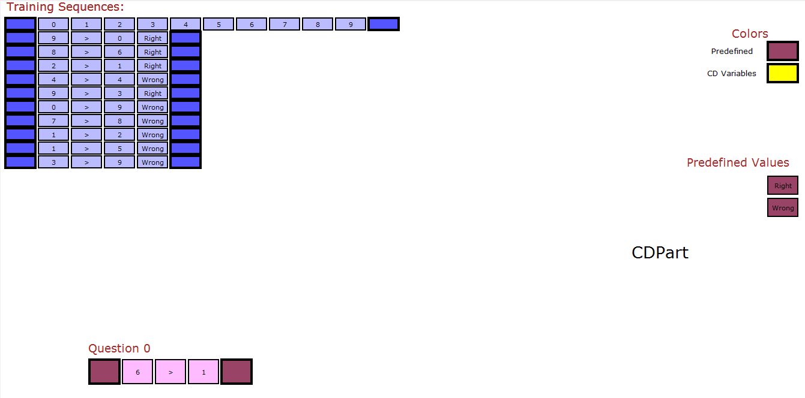

Common-Description Learning (CDL)
This is a new framework to learn simples patterns from a few number of examples and use them to learn harder ones. the learned models are perfectly interpretable and its depth depends on the question. What is meant by depth here is that whenever needed, the model learns to break down the problem into simpler subproblems and solves them using previously learned models, CDL is written in C++ and tested on 32 small datasets
The paper can be found at: arxiv..
Group_B (dataset_2): Three one-digit numbers addition

(dataset_19): Reverse task Group_A

Group_B (dataset_3)

Group_A (dataset_24): Comparing One Digit Numbers

Directories
src/ - source files
dataset/ - dataset divided into three groups (Group_A: 25 small datasets, Group_B: 5 small datasets,Group_C: 2 small datasets)
experiments/
- 3 outputFiles: contain MGICDs learned in each group of datasets and some statistics about training
- 32 animation files that explain how MGICD solve the test questions, they can be shown by running
animate.pybut need first to to change the directory of the animation file in the first line. you can also change the animation speed by changing the value of nodeTime. Tested on Python 3 - Most of CDs in the outputFiles can be displayed by
visualizeCD.py, but it need first to be copied in CD.dat
Installation on Linux
$ make
$ ./runner
Usage
You can edit Driver.cpp to learn datasets in Group_A, Group_B or Group_C. For example, to learn the first dataset in Group_A write this in main():
IOH.loadDatasetsAndQuestionsFromFile("dataset/Group_A.dat");
Constants::redirectStdoutToOutputFile = true; //redirect stdout to OutputFile.txt
setHyperParameters(1,2,1,2,7,0,0,1); //set hyperparamters for the 25 dataset in file Group_A.dat
TE.learnAndTest(0); //learn & test the first Dataset in file Group_A.datThe results and learned models will be save in OutputFile.txt.
To learn all the datasets in Group_A:
IOH.loadDatasetsAndQuestionsFromFile("dataset/Group_A.dat");
Constants::redirectStdoutToOutputFile = true; //redirect stdout to OutputFile.txt
setHyperParameters(1,2,1,2,7,0,0,1); //set hyperparamters for the 25 dataset in file Group_A.dat
TE.learnAndTest(); //learn & test all Datasets in file Group_A.datYou can also write a new dataset and test it but it must be formatted like other datasets
License
This project is licensed under the terms of the MIT license